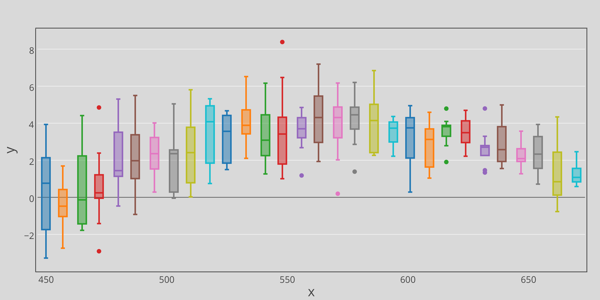

Consultancy in Research Design and Quantitative Data Analysis
We offer a full range of consulting services to help our clients collect, analyze, report, and visualize their data. We have particular strengths in survey design and analysis, as well as experimental methods. Contact us today to discuss how we can turn your data into insight.
Some Services that We Offer
- Comprehensive review and analysis of existing data (when available)
- Research design and planning
- Development of questionnaires
- Management of data collection
- Quantitative analysis and visualizations
- Triangulation using mixed method approaches
- Detailed action plans